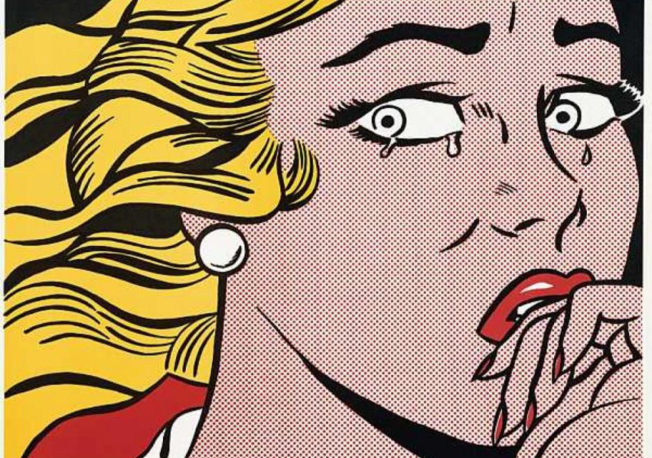

Webcomics
Полноценная платформа с библиотекой интерактивных комиксов и конструктором собственных комиксов и визуальных историй
Манифест
Наш манифест — это ключевые цели, которые мы преследуем, создавая наш проект:
- Технологии помогают делать лучше и проще
- Интерактивные комиксы — это легко
- Создавать может каждый
Проблема
Весь современный мир перебирается в новые технологии, становится интерактивным. Исчезает формат Flash, на котором базируется большинство интерактивных комиксов. Кроме того, у многих людей нет необходимых навыков программирования и знаний специфических программ, чтобы создавать собственные вебкомиксы. А существующие сервисы имеют довольно сложные структуру и интерфейс.
Решение
- Исчезающий формат флэш заменяем на современные веб-языки
- Открываем новый мир веб-комиксов для людей не знающих программирование посредством создания конструктора с готовыми эффектами и настройками
- Создаем профильную платформу-портфолио для иллюстраторов визуальных новелл и интерактивных комиксов и добавляем понятный интерфейс
Целевая аудитория
Сервис направлен в первую очередь на иллюстраторов и мультипликаторов, а в целом — на людей, которые хотят рассказывать визуальные истории.
Риски
Из-за чего проект может не состояться?
- Возрастание стоимости сервера без компенсации за счет прибыли
от сайта - Нагрузки на сервер при загрузке больших объемов медиафайлов
и провисание - Отсутствие ожидаемого интереса к сервису
- Риск не уложиться в дедлайн
Команда
Даша:
Back-end, media optimisation, design
Настя:
Front-end, JavaScript animations&effects, design
Настюша:
Front-end, JavaScript, UI, design, cloud service